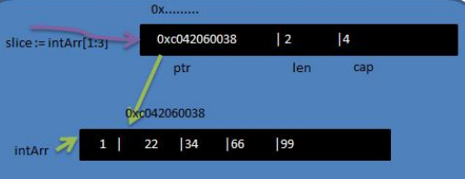
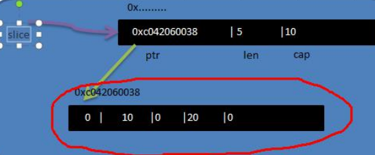
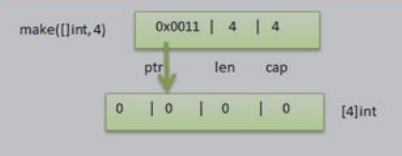

Go语言中的切片
本文最后更新于：2021年9月14日 凌晨
Go语言中的切片
切片的基本介绍
切片，slice
是数组的一个引用，因此切片是引用类型，在进行传值时，遵守引用传递的机制。
切片的使用和数组类似，遍历切片、访问切片的元素和求切片长度len(slice)都一样。
切片的长度是可以变化的，因此切片是一个可以动态变化的数组。
定义的基本语法：
1 | |
快速入门
演示一个切片的基本使用：
1 | |
切片在内存中形式（重要）
基本的介绍：

slice的确是一个引用类型
slice从底层来说，其实是一个数据结构（结构体）
1 | |
切片的使用
- 方式一：
第一种方式：定义一个切片，然后让切片去引用一个已经创建好的数组。
- 方式二：
第二种方式：通过make来创建切片
基本语法：var 切片名 []type = make([]type, len, [cap])
参数说明：type数据类型，len大小，cap指定切片容量，可选，如果你分配了cap，则要求cap>=len
1 | |

1）通过make方式创建切片可以指定切片的大小和容量
2）如果没有给切片的各个元素赋值，那么就会使用默认值
3）通过make方式创建的切片对应的数组是由make底层维护，对外不可见，即只能通过slice访问各个元素
- 方式三
第3种方式：定义一个切片，直接就指定具体数组，使用原理类似make的方式。
1 | |
方式1是直接引用数组，这个数组是事先存在的，程序员是可见的。
方式2是通过make来创建切片，make也会创建一个数组，是由切片在底层进行维护，程序员是看不见的。make创建切片的示意图∶

切片的遍历
切片的偏历和数组一样，也有两种方式
- for循环常规方式遍历
- for-range结构遍历切片
1 | |
切片的使用的注意事项
1）切片初始化时var slice = arr[startIndex:endIndex]
说明：从arr数组下标为startIndex，取到下标为endIndex的元素
2）切片初始化时，仍然不能越界。范围在[0-len(arr)]之间，但是可以动态增长。
var slice = arr[0:end] 可以简写 var slice = arr[:end]
3）cap是一个内置函数，用于统计切片的容量，即最大可以存放多少元素。
4）切片定义完后，还不能使用，因为本身是一个空的，需要让其引用到一个数组，或者make一个空间供切片来使用。
5）切片可以继续切片。
6）用append内置函数，可以对切片进行动态追加。
1 | |
7）切片的拷贝操作
切片使用copy内置函数完成拷贝，举例说明
1 | |
string和slice
1）string底层是一个byte数组，因此string也可以进行切片处理
1 | |
2）string是不可以改变的，不能通过str[0]=’z’方式来修改字符串
3）如果要修改字符串，可以先将string->[]byte/或者[]rune->修改->重写转成string
1 | |
本博客所有文章除特别声明外，均采用 CC BY-SA 4.0 协议 ，转载请注明出处！